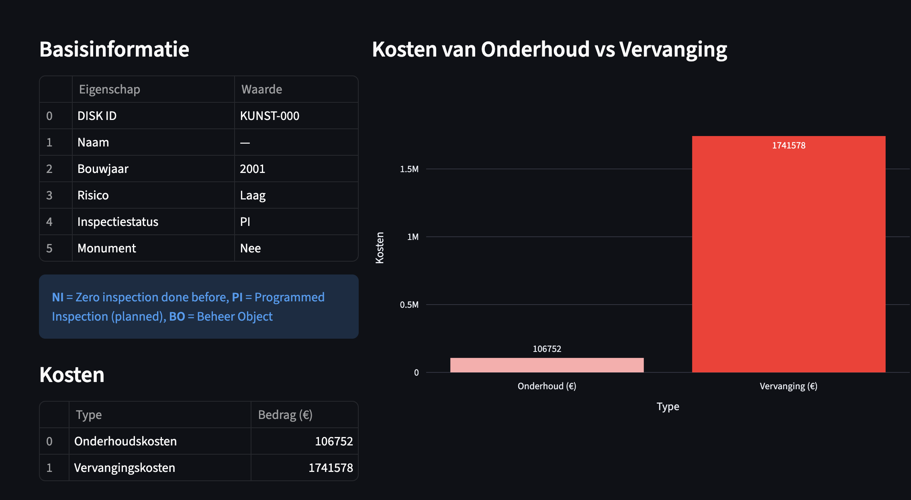
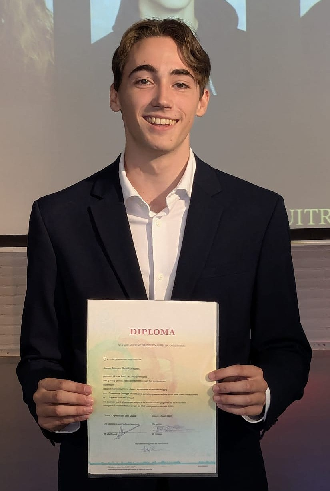
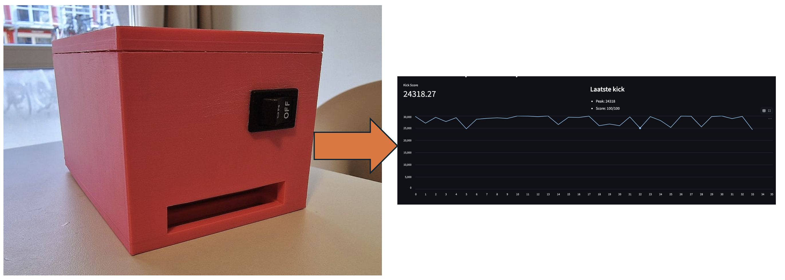
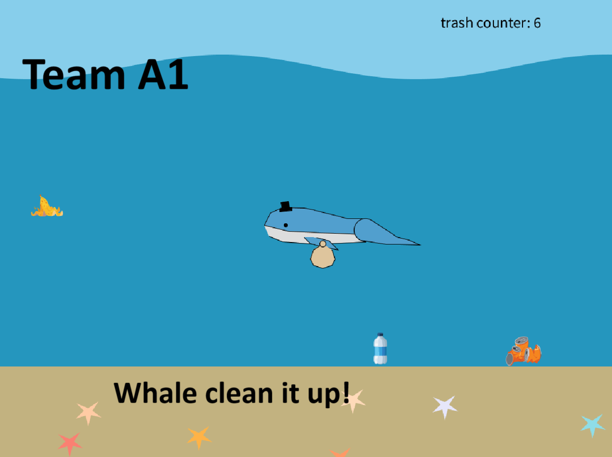
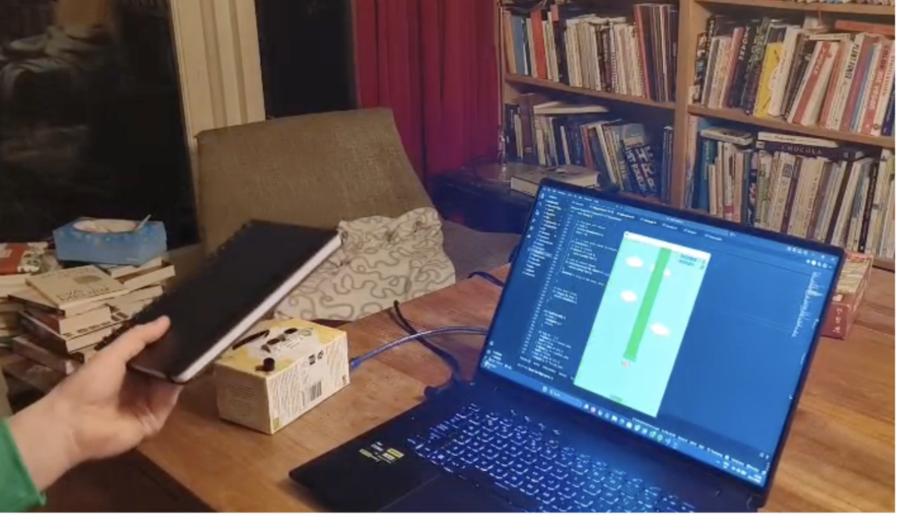

Hi, I'm Aaron Struikenkamp
I build interactive projects and explore design & engineering during my Creative Technology studies.
This portfolio shows highlights from my study Creative Technology at the University of Twente.

About me
I'm a Creative Technology student at the University of Twente. In this study I explore interaction design, prototyping, programming, and collaborative project work. I am a true problem-solver, I can get lost in thought easily and I come up with interesting technological solutions for existing problems.
Core skills
(Mobile) App development, 3D Design, Programming, Mathematics, Making user-oriented solutions
Tools
Processing, HTML/CSS/JS, Dart, Flutter, Fusion and Blender
Interests
Design, computer science, sustainable tech and engineering.
Projects
Here are some interesting projects I contributed to. Click "Read more" for details.
Module 3 — Living & Working Tomorrow

Module 2 — Smart Environments


Personal Projects
Timeline
-
Module 1: 'Foundations of CreaTe'
Intro projects, basic prototyping, programming, teamwork, first exposure to physical computing and design thinking.
-
Module 2: 'Smart Environments'
We covered electrical engineering, smart environment design and physical computing. Projects include Ultrasonic Flappy Bird (Programming & Physical Computing) and Whale Clean It Up!
-
Module 3: 'Living & Working Tomorrow'
Working with real clients while gaining knowledge on mathematics, physics and human-centered design. Projects include 3Disk (for Rijkswaterstaat) and the Martial Arts Kick Tracker (Professional Development).
Contact
Interested in collaborating or want to see more? Reach out:
- Email: aaronstruikenkamp@gmail.com
- Socials: LinkedIn
- GitHub: AaronMarcusDev